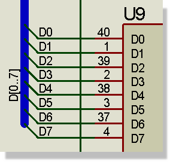

BUSES
Introduction
A bus is a kind of shorthand for a large number of wires, and is commonly used on microprocessor schematics. Proteus includes an unprecedented degree of support for buses, including not only the ability to run buses between hierarchy modules but also the facility to define library parts with bus pins. Thus it is possible to connect a CPU to an array of memories and peripherals by single bus wires, rather than a complex arrangement of wires, bus entries and buses.
Placing Buses
Buses are placed in very much the same way as ordinary wires except that they must run to and from bus connection points, rather than wire connection points. Also, unlike wires, buses may be placed in isolation from any other objects.
To place a bus:
- Select the Bus icon from the Mode Selector toolbar.
- Point the mouse where you want the bus to start. This may be a bus pin, an existing bus, or free space on the drawing.
- Click left to start the bus, then click again at each corner of the desired bus route.
- To finish the bus on a bus connection point (a bus pin or an existing bus) point at it (the cursor will change to indicate that you are over the connection point) and click left. To finish the bus in free space, double left click the mouse.
Bus Labels
A bus may be labelled in exactly the same way as a wire. However, Proteus defines a special syntax for bus labels.
To place a bus label :
- Select the Wire label icon from the Mode Selector toolbar.
- Point on the bus at the position where you want the label to be placed.
- Click left to place the label. The Create Wire Label or Edit Wire Label dialogue form will be displayed.
- Type in the required text for the wire label. This should be something like D[0..7] or A[8..15]. If you omit the range specification then the bus will take its base as zero and its width from the width of the widest bus pin connected to it. In general, however, you should always use range specification.
- Click OK or Press ENTER.
You cannot place a wire label other than on a wire or a bus.
You cannot place more than one wire label on one section of a bus. Attempting to do so will edit the existing wire label.
Proteus will orient the wire label according the orientation of the wire segment on which it is placed. This can be changed on the Edit Wire Label dialogue form.
To edit a bus label:
- Select the Selection icon from the Mode Selector Toolbar.
- Left click on the bus label. Both the bus and the bus label with be selected. Care is required to actually left click on the label and not the bus itself.
- Right click and select edit label from the resulting context menu. If this option is not available on the context menu then you have clicked on the bus and not on the bus label. Try zooming in around the bus label to ensure accuracy.
To delete a bus label:
- Select the Selection icon from the Mode Selector toolbar.
- Left click on the label. Both the bus and the bus label with be selected. Care is required to actually left click on the label and not the bus itself.
- Right click and select delete label from the resulting context menu. If this option is not available on the context menu then you have clicked on the bus and not on the bus label. Try zooming in around the bus label to ensure accuracy.
To change the appearance of a bus:
- Ensure the Wire Label icon is not selected.
- Tag the bus by pointing at it and clicking right.
- Select the Edit Wire Style dialogue from the resulting context menu.
- Uncheck the Follow Global? checkboxes of those style attributes of the graphics style you want to change. If a style attribute and its Follow Global? checkbox are both disabled it is because the style attribute is not meaningful given other attribute settings, either locally or through following the global style attribute.
- Set the style attributes to the required settings
- Press ENTER or click the OK button to close the dialogue form and keep the changes. Press ESC or click the CANCEL button to close the dialogue form and abandon changes.
To change the appearance of all buses on the schematic, use the Set Graphics Style command on the Template menu to edit the BUS WIRE graphics style.
Wire and Bus Junctions
Sometimes, even with the provision of bus pins, it is necessary to tap off a single signal from a bus, perhaps for decoding purposes. From a purely graphical point of view this is just a matter of placing a wire that ends on the bus:
To place a bus tap:
- If you plan to route the wire from the bus to another object, ensure that the Bus icon is not selected.
- Place the wire in the usual way. The bus will behave like an ordinary wire in these circumstances.
It may be helpful to you to understand that when you place a wire in this way, automatic dot placement will operate to give the wire and bus something to connect to. However, you will not see the dot as it adopts the same colour and width as the bus.
Having got a wire joined to a bus, you must specify which signal from the bus you are tapping.
Double clicking a component pin to invoke Wire Auto-repeat is particularly useful here if you are tapping several lines from pins to bus.
To annotate a bus tap :
- Ensure that the bus carries a bus label such as D[0..7]. This label would define eight nets called D0, D1, ... , D7
- Place a wire label on the wire to indicate which signal it is tapping.
An example of this is shown below :

Bus Taps on a schematic
If the bus doesn't connect to any bus pins or bus terminals, you can omit step [1]. In these circumstances, the bus itself plays no part at all in the determining the design connectivity.
You can also place bus taps semi-automatically via the Property Assignment Tool; refer to the PAT examples topic for more information.
Placing a bus tap without annotating it will be reported as a netlist error as it is a wholly ambiguous situation. Proteus cannot know which signal you are trying to tap. Nor can a human reader for that matter!
Bus Properties
A bus or bus label (they are equivalent for this purpose) has the following property:
| Property Name |
Description |
|
NET
|
The bus label text |